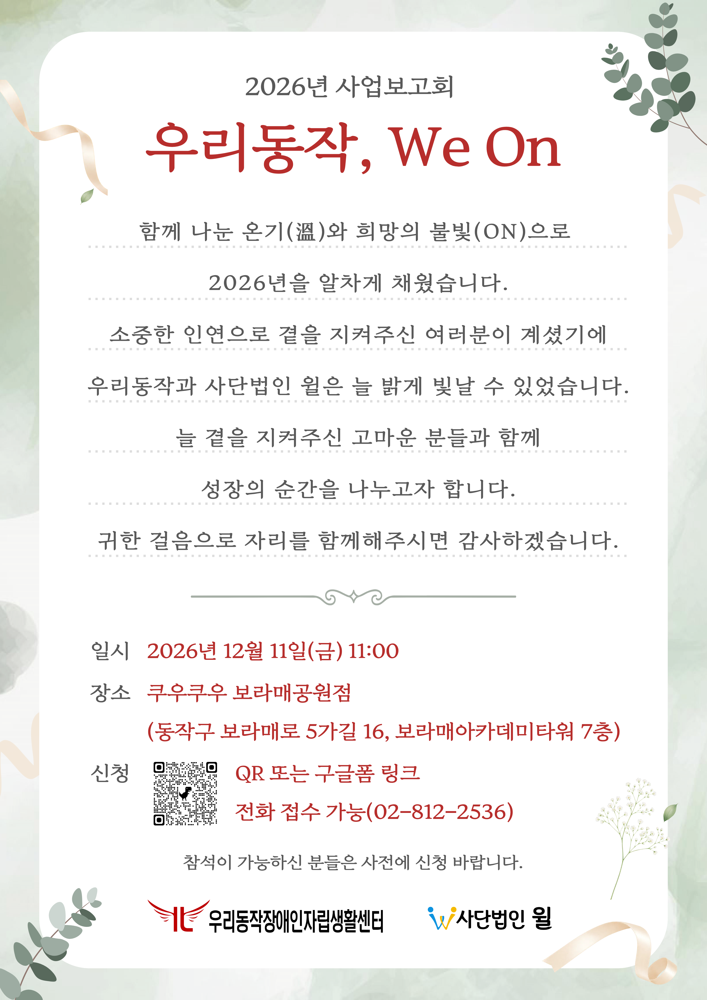

참가 신청하기 ↗
2026년 사업보고회
우리동작, We On
함께 나눈 온기(溫)와 희망의 불빛(ON)으로
2026년을 알차게 채웠습니다.
소중한 인연으로 곁을 지켜주신 여러분이 계셨기에
우리동작과 사단법인 윌은 늘 밝게 빛날 수 있었습니다.
늘 곁을 지켜주신 고마운 분들과 함께
성장의 순간을 나누고자 합니다.
귀한 걸음으로 자리를 함께해주시면 감사하겠습니다.
일시: 2026년 12월 11일 금요일 11시
장소: 쿠우쿠우 보라매공원점 / 동작구 보라매로 5 가길 16, 보라매아카데미타워 7층
신청은 초대장 하단에 위치한 QR 코드 또는 신청하기 버튼, 전화 접수 가능합니다.
02-812-2536
참석이 가능하신 분들은 사전에 신청바랍니다.
주최, 주관: 우리동작장애인자립생활센터, 사단법인 윌